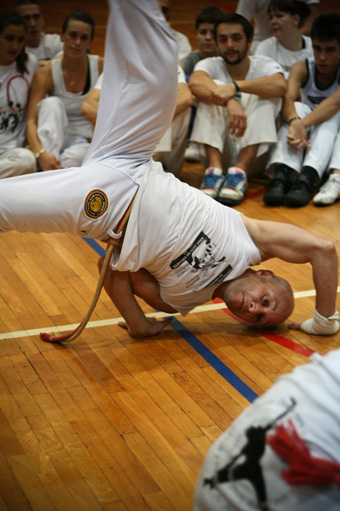

In love with Capoeira Senzala
Все, друзья, окончательно и бесповоротно влюбилась я в группу Capoeira Senzala. Вообще-то я люблю их нежно и давно – еще с Кавейрой вместе впервые смотрели видео с бесподобным Mestre Sorriso. С тех пор я стараюсь по возможности всегда посещать их мероприятия и всегда с радостью пою «Chama e, chama e, chama e Senzala, chama e». С 2009 года внушительные по размаху мероприятия Сензалы организует mestre Pulmao в Сербии, в вечно туманном Белграде.
Это вести с белградских полей, с семинара Semana da Cultura Brasileira 2011.
Боюсь, снизить эмоциональный фон поста мне не удастся, так что считайте, что я вас предупредила.
Для меня капоэйра лучше всего выражается в слове alegria, а этот семинар – сплошная alegria.
Для начала вот список участников мероприятия Semana da Cultura Brasileira 2011 (у нас всю неделю было ощущение, что мы в ютубе):
Mestre Toni Vargas
Mestre Ramos
Mestre Torneiro
Mestre Zumbi
Mestre Feijão
Mestre Flavio
Mestre Malzibier
Mestre Steen
Mestre Pedro
Mestre Pelé
CM Chiquinho
CM Banana
CM Luis Claudio
CM Igor
CM Panaca (Capoeira Brasil)
Prof. Lobisomem
Profa. Marla
Prof. Duzentos
Profa. Renatinha
Prof. Coqueirinho
Prof. Kapacete
Prof. Camarão
Prof. Duende (Grupo Vadiando Capoeira)
Profa. Pimenta (Capoeira Brasil)
Graduados:
Dendê – Corda Roxa-Amarela
Orelha – Corda Roxa-Amarela
Fumaça – Corda verde
Sal – Corda verde
Rogerinho – Corda verde
Special guests:
Contra Mestre Cabello – Capoeira Angola Center – Student of Mestre João Grande
Contra Mestre Marquinho – Capoeira Angola Center – Student of Mestre João Grande
Сербские капоэйристы работали два года над тем, чтобы организовать всех этих бразильцев и собрать их в одном месте в одно время. Мне жаль, что они не распространили информацию об этом событии по Европе, потому что кроме сензальцев и трех засланных казачек из Mundo Capoeira других гостей у них не было. И это при таком количестве мастеров, занятий, информации, возможностей.
По словам Mestre Pulmao, они стараются сейчас отойти от маркировки „Сензала“ и создать событие в мире капоэйры, а не в мире капоэйры Сензала. Собственно, первые ласточки этих попыток – специальные гости Cabello и Marquinho, представители школы Mestre João Grande. Что приятно, на семинаре им было отведено почетное место, несколько полноценных тренировок, достаточно времени для того, чтобы донести до наших контемпорских умов понятие об капоэйре Ангола.
Mestre Cabello скоро появится в России, на семинаре Cordao de Ouro, так что я надеюсь, что ребята поделятся своими впечатлениями. Я же скажу, что нас он впечатлил едва ли не больше всех остальных мастеров – столько жизни в нем, столько энергии, столько любви к капоэйре. Он из тех людей, которые умеют заражать своей любовью, заполняют своей невероятной харизмой весь зал. Cabello совершенно не интересовало то, что мы впервые Анголу пробуем:
«Забудьте про ваши корды и белые штаны, становитесь в пары и учитесь Анголе! У вас сейчас нет уровня, вы все равны, вы все просто капоэйристы». Частенько он бывал строг, и от его окрика все прятались в кокориньи, а потом улыбались оттуда его шуткам. Cabello учил нас слушать ритм, учил повиноваться беримбау, учил осознанности.
«Часто капоэйристы похожи на безголовых цыплят. Они дрыгаются в роде и не видят, что творят. Вы знаете, что мы делаем с безголовыми цыплятами в Бразилии? Мы их тушим, варим, жарим и едим! Вы все еще хотите быть безголовыми цыплятами? Тогда думайте, что вы делаете в Роде!»
Вообще эта мысль „думайте, что вы делаете в Роде“ — лейтмотив всего семинара. Все мастера, каждый в своей манере, учили нас думать, учили отходить от автоматизма заученных движений и импровизировать, соображать, реагировать по-новому, делать ходы, создавать комбинации и возможности. Оно как бы очевидно, да? А многие ли это умеют? Я вот не умею, поэтому с радостью училась у всех понемногу.
Да, за что я вообще люблю Сензалу? По моим ощущениям, в ней корешки того, чем я занимаюсь (meu Deus, чем я занимаюсь???). Raizes da capoeira – использовали мы когда-то такое название для нынешнего capoeira.in. В Сензале очень чувствуется преемственность и наследственность капоэйры, передача знаний, мыслей, информации. Есть несколько поколений мастеров, и когда они все встречаются на таком событии, как эта Semana da cultura Brasileira, видно, как развивалась и росла их группа. Есть Tony Vargas, Ramos, Sorriso, Gato, конечно, Claudio Danadinho – они сейчас отвечают за группу, они оказались старшими сейчас, когда ушел Mestre Peixinho. И нужно видеть, как безмерно уважают их все остальные, как видят в них пример для себя. Есть поколение молодых мастеров – Torneiro (учитель любимого многими Cara de Peixa), Pele, Zumbi (учитель талантливейшего CM Chiquinho). Есть бесспорные звезды и в ожидаемом времени мастера – CMs Chiquinho, Luis Claudio, Banana, Igor. Есть старательные и вдохновленные professores и graduados, которые изо всех сил тянутся к своим мастерам и с почтением следуют за ними. Это все здорово проявляется на семинаре, в поведении людей, в их стиле преподавания, в их работе на тренировках, в их игре, разумеется. Друзья, за целую неделю ежедневных капо-мероприятий не было ни одного неприятного момента, ни одной грязной игры, ни одного проявления агрессии, выпячивания эго, ухода в партер и джиу-джицу или в бездумные флорейос. Всю неделю Сензала во всем своем цвете показывала чистую красивую умную осознанную харизматичную игру.
Я приехала на семинар с целью поработать в том числе и над некоторыми своими проблемами. Например, мне не нравится моя чрезмерная эмоциональность в игре, легкопровоцируемость и, как следствие, неконтролируемые мартелы. Я запретила себе делать мартелы, даже если меня будут провоцировать. За всю неделю я сделала всего два таких удара, amigos – это для меня маленькая, но победа. Одна мартела предназначалась прекрасной сензальской девушке – чисто женские разборки случились, вторая Луису Клаудио – из-за чрезмерного волнения от долгожданной встречи в Роде. Со всеми сензальцами – от новичков, до мастеров – хотелось играть чисто, красиво, осознанно – как они играют.
Отлично был организован сам семинар – никаких остановок, простоев, никаких шансов остыть и отдохнуть. При этом (учитывая то, что до этой сумасшедшей недели у меня был трехдневный семинар в СПб со своим Мастером) тело чувствовало себя отлично – мастера вовремя заставляли растягиваться, восстанавливаться, чтобы потом снова поработать в полную силу. На ногах, правда, живого места от синяков нет, но это чисто тренировочные моменты))
Понравилось еще, что никому дела не было до логотипа на наших штанах и до наших корд. Мы тренировались в первых рядах, выходили первыми в роду – не потому что гости, а потому что приехали учиться и брать все, что возможно, и получали что хотели. При этом вроде сильно не наглели, подчинялись общим правилам ведения тренировок и роды.
Чтоб вы не заскучали от большого количества текста, вот вам фотографий с краткими комментариями.
Mestre Tony Vargas e Mestre Ramos. Когда эти двое оказываются вместе в батерии — Роду раскачивает в момент. Они даже не смотрят друг на друга — они просто слышат беримбау друг друга и разговаривают на языке этих инструментов. Наблюдать за ними в этот момент — невероятное удовольствие.
Мастер с простым бразильским именем Pedro оказался сыном уважаемого мной Mestre Gato, который в этот раз на семинар не приехал. За свою внешность типичного порядочного американского семьянина он получил от нашей острой на язык команды русское апелиду «Местре Идеальный Муж». Pedro учит вести игру, создавать возможности в ней, провоцировать другого игрока на нужные тебе действия. «Если вам в лицо летит миалуа ди компассу — don't panic», — учит Pedro и невозмутимо делает прекрасную банду под летящую в лицо миалуа. Он же научил быть смелее и не бояться этих ударов в лицо.
Лучший и самый знаменитый голос Сензалы. Lion voice. Довел до слез нашу Тамару. Взял и спел в Роде Era uma noite sem lua. Тем самым голосом с третьего трека, который каждый день в машине играет по дороге на тренировку. Тамара возьми и расплачься, по-девичьи так, а Тони возьми и поцелуй ей руку прямо во время песни. Ну тут чуть все остальные не прослезились)))) Как там — „мимимимимии“ — вот))
Mestre Feijao — все такой же реактивный и отчаянный капоэйрист с царской осанкой и непроницаемой душой. Местре Воин — не иначе.
Mestre Pele — самый добродушный и улыбчивый сензальский мастер с весьма серьезной капоэйрой и серьезным подходом к тренировкам. На его занятиях все работали как проклятые. Раньше Pele преподавал в Португалии, но сейчас перебрался в Италию. Порадовал нас душевной песней собственного сочинения в память о mestre Peixinho. Чувствуется, как они все по нему скучают и как им его не хватает.
Mestre Ramos — я его называю «Мастер Мастеров». Он же гений просто. Он умеет дирижировать Родой и подкручивать громкость хора одной бакетой. И работать всех заставляет на совесть.
Mestre Pulmao — организатор всего этого великолепия. «Я не знаю, зачем каждый из вас здесь, но я надеюсь, каждый найдет то, зачем он пришел». Думаю, получилось так, как он хотел.
Mestre Zumbi — получил от нас звание „Король сертана“. Самый интелигентный, что ли, из многих мастеров. Живет в Нью-Йорке, говорит по-английском, размышляет о капоэйре и доступнее многих доносит свои мысли до учеников. Порадовал нас любимой песней Malandragem в своем роскошном исполнении и отличным форро.
CM Chiquinho — старый знакомый по прошлому семинару и по киевскому семинару Сензалы. Стал взрослее и мудрее, сменил беспечную улыбку на светлую грусть, побрился налысо, значительно вырос в преподавании. Двигается все лучше, все бесподобнее и неповторимее. Кстати, лучшая из девушек на семинаре — именно его ученица. Chiquinho очень большое значение придает качественным тренировкам — качеству не только преподавания, но твоей личной работе как ученика. И все время говорит, что капоэйру мы создаем все вместе. Что та самая магическая энергия, которая позволяет игрокам проводить в Роде по 20 минут, создается всеми — батерией, кантадором, всеми, кто стоит в кругу.
«Мир капоэйры не такой уж большой, и два игрока всегда встретятся у pe do berimbau» — CM Luis Claudio. Самая красивая игра, которую мы наблюдали на этом семинаре — игра mestre Torneiro и CM Luis Claudio. Надеюсь, она когда-нибудь появится в ютубе, и я смогу поделиться ею с вами. Тогда хотелось каждую секунду нажать replay и понять — как они так играют??? Чувствовалось, что они давно не играли вместе и вот теперь — дорвались. The best of the best of the best.
Задание на литературный перевод от CM Luis Claudio: «A roda de capoeira e como um oceano, quando algum despreparado entra na roda, ele entra no meu mundo. Eu sou como um tubarao e muitas pessoas nao sabem nem mesmo nadar…» Учимся плавать, друзья ;)
Из бесед на тренировке:
- Mestre, как научиться делать макаку?
- работать над ней каждый день, только так. Капоэйра — как любовь, как отношения, над которыми тоже надо работать каждый день
Кто еще объясняет капоэйру через любовь?
И еще:
„Я раньше думал, что мастера ничего не объясняют на занятиях, сердился на них. Потом понял, что не мастера не объясняют — это ученики не задают вопросов. Задавайте вопросы!“

CM Luis Claudio:
«Капоэйрист играет для себя, не для того, чтобы показать, продемонстрировать себя кому-то другому. Не для того, чтобы казаться лучшим. Капоэйрист играет для того, чтобы играть, чтобы чувствовать себя свободным, чтобы получать удовольствие, для свободы, для того, чтобы ощущать эмоции жизни, эмоции от опасности, от malandragem, от каждого проживаемого момента».Я ему так и говорю: «Луис, ты уже мастер давно, что за приставка contra….»
CM Banana (справа) и Prof. Duzentos, которого мы ласково называли «Профессор убийца»))) Оба играют как вода струится — залюбуешься.
CM Igor тоже знаком с прошлого сербского мероприятия. К сожалению, на этом событии он не очень впечатлил — больше выяснял отношения со своей итальянской mulher, чем играл капоэйру. А еще и волосы отрастил и стал похож на Валерия Леонтьева, за что и получил русское апелиду с понижением звания Graduado Valera. Но шутки шутками, а не могу не отметить его мягкую красивую пластичную капоэйру.
Ну и наша русская galera. В последний день мы уже устали от белых торжественных одеяний и пришли в стиле гоп-стоп) Только наша Настя по-прежнему сохраняет образ русской красавицы.
Это фото для Кавейры, я ему обещала, что повезу в Белград самых красивых девушек. Юрка, мы честно ходили в платьях каждый день)))
Ну и чтобы вы совсем порадовались — вот парочка видео, прямо оттуда. Сама все видела)Обратите внимание на песню! Хороша ведь!